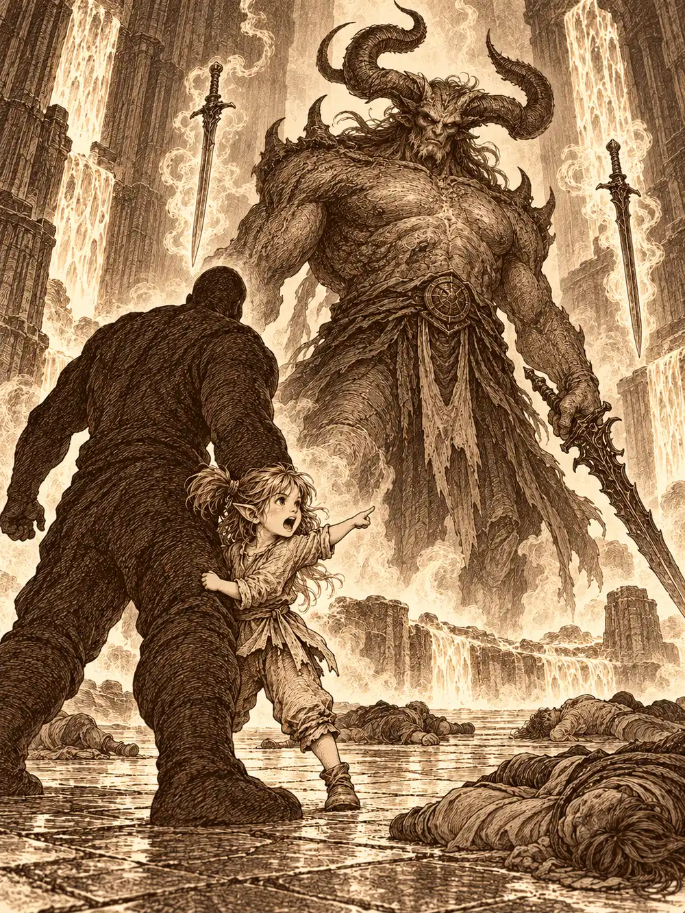

Capítulo 180
La guarida del demonio
Libro X · Hasta pronto, Kuroto
El campamento del sur olía a vendas sucias y a caballo. Por el camino que bajaba de las montañas subían carros cargados de heridos, hombres con la cara gris y los ojos cerrados, y por el mismo camino bajaban otros llenos de sacos y flechas. Con la cúpula otra vez sobre el norte, una guardiana nueva y un protector a su lado, los ejércitos del shogunato habían empezado a avanzar hacia la fortaleza de Otakemaru. Sin generales que los guiaran, los demonios ya no eran un ejército sino un caos que mordía. Seguía costando sangre cada paso.
Los cazadores esperaban en el centro de aquel trasiego: Hayate, Ikari, Channi, Kazuki, Jin, Palayer, Arwen y, por primera vez entre ellos, Véspera. Alguien dijo en voz alta lo que todos pensaban.
"Dos años. Dos malditos años aquí, y parece un sueño. Pero es el final. No sé qué pasará dentro de unas horas. Sé que estaremos juntos".
Hubo manos en los hombros, una caricia en la cabeza de Channi, un abrazo largo para Hayate, que era de los más antiguos.
Entonces llegó el ruido. Un petardeo atronador, parecido al del Camaro pero más rabioso, salió del portal, y detrás salió una moto negra envuelta en llamas. Encima iban Guxi, Serafina y R3, los tres con gafas oscuras, incluido el autómata. R3 ya no era el mismo: viajaba metido dentro de un armazón nuevo, una pequeña armadura a su medida. La moto derrapó delante de ellos y les tiró tierra a los pies.
"Menuda entrada", dijo Ikari.
Guxi traía regalos. A Arwen le entregó una silla con ruedas que se acoplaba bajo su mochila y se manejaba con un volante diminuto. La niña se subió, aceleró y empezó a dar vueltas derrapando por todo el barro del campamento, riéndose como una loca. A Véspera le dio su escudo de siempre, el de los cazadores. Cuando ella apretó un botón, se desplegaron unos abanicos de hierro a los lados y el escudo se convirtió en un muro que la cubría entera.
"Es perfecto. No he conocido mejor artesano en todos mis tiempos".
"Gracias a mi maestro. Que en paz descanse".
Kazuki se agachó junto a Channi. La pequeña acariciaba una capa que no era suya, la de Kurobane, y no levantaba la vista. El noble le colocó bien las hojas de la cabeza y le dijo que lo encontrarían. No dijo cuándo.
"Aunque no estemos todos, hay que ponerse en camino", dijo Véspera. "Si aligeramos el paso, a los que faltan les será más fácil llegar". Jezebel bajó del cielo junto a ella, se quejó en infernal del aspecto de aquella gente y del barro, y lució en la grupa una pegatina con un corazón y el nombre de Kuroto. El portal crepitó una vez más y apareció Sun, el protector de la guardiana, que se quedó admirando la moto.
"Si sobrevivimos, me la prestas", le dijo a Guxi. "Y si no sobrevives tú, me la quedo yo".
Cruzaron las montañas y la Puerta Negra, donde el shogunato había levantado puestos de avanzada, y entraron en las tierras de Otakemaru. Al principio encontraron rezagados, pequeños combates, campamentos a medio montar. Después oyeron la batalla antes de verla. Rocas, fuego y acero chocaban en una llanura cubierta de demonios hasta donde alcanzaba la vista; por el cielo volaban criaturas aladas y unos nue enormes soltaban rayos que chamuscaban a los soldados. Los soldados no retrocedían. Sabían que era la última.
Se metieron dentro. Guxi conducía la moto con las torretas montadas a los costados, disparando sin parar, y Serafina saltaba desde el asiento a las cabezas de los demonios y volvía. Sun peleaba desde su nube. Arwen corría en su silla de herido en herido. Palayer abría el frente, y Jin se ponía delante de los soldados que ya no podían defenderse. Channi enredaba a los enemigos con raíces y luego se hacía águila para golpear desde arriba. Véspera interponía el escudo, y cuando el escudo no llegaba, las alas y el cuerpo. Hayate llamaba rayos desde el cielo. Las flechas de Kazuki atravesaban filas enteras. Las sombras de Ikari y sus perros oscuros mordían los tobillos de los que se acercaban. Nada de aquello era gratis. Cada uno recibía golpes y quemaduras, y la sangre propia empezaba a mezclarse con la ajena.
Aun así, el frente se atascaba. Entonces empezaron a llegar ellos.
Una flecha brillante cruzó la llanura y atravesó a varios demonios en fila. Detrás vino otra, y otra. Eran cazadores, cazadores de antes, algunos con quienes nunca habían compartido misión y otros cuyas caras no veían desde hacía años. Llegaron por todos lados: con arcos, con hachas, con tambores, con magia y con las manos desnudas. Un grupo de sombras empezó a cortar tendones y a dejar caer cabezas sin que nadie los viera llegar, y de entre esas sombras salió un grito que todos conocían.
"¿Eso es todo lo que tenéis, perros de Otakemaru? ¡Venid todos!".
Banzo apareció entre los shinobi de Tiari, lanzando demonios por los aires como quien aparta sacos. Saltó hacia ellos.
"¿Dónde estabais? ¡Aún quedan para vosotros, familia!".
Arwen sonrió de oreja a oreja y salió disparada a curar a los recién llegados. Un nue enorme se lanzó entonces sobre ellos. Sun agarró a Banzo por el brazo y se lo llevó con la nube hacia arriba, muy arriba, girando como una peonza, y en lo más alto lo soltó. El goliat cayó en picado con los carrillos temblando y el hacha por delante, y partió al nue en dos.
"¡Esto va por Gur!".
R3 descargó electricidad entre los enemigos. Banzo agarró lo que quedaba del nue por la cola, lo hizo girar y lo arrojó hacia donde peleaban los cazadores antiguos.
"¡Vosotros marcasteis el camino! ¡Ahora nosotros acabaremos! ¡Aguantad!".
Seguían sin poder avanzar. Entonces cayó del cielo un demonio enorme con un martillo y aplastó a todos los que había debajo. Era Gur, en su forma demoníaca, con su rabia de siempre. Repartía martillazos que mandaban demonios volando como hojas secas, y en tres golpes abrió un pasillo hacia la fortaleza.
"¡Vosotros avanzad! ¡Yo me quedo con la fiesta!".
Véspera levantó el escudo y gritó con una voz que retumbó sobre la batalla que había que aprovechar la apertura. Kazuki desplegó unas alas translúcidas de hada, se elevó, juntó las manos y al separarlas abrió el cielo, y del cielo empezaron a caer meteoros, uno, dos, cientos, sobre los demonios que cerraban el paso. Corrieron por el hueco que Gur les había abierto. Detrás, el ruido de la batalla no se detenía.
La entrada de la fortaleza no tenía puertas. Había un marco enorme labrado con calaveras y figuras de yokai retorcidas, y dentro del marco, oscuridad. Una piedra que Sun pateó desapareció sin ruido. Su bastón entró y salió intacto. Banzo intentó cruzar.
En cuanto metió la mano, la piel empezó a deshacérsele como cera, y una fuerza lo arrojó hacia atrás. Palayer y Arwen corrieron a curarlo, a meterle pociones en la boca, a cerrarle la carne derretida. Véspera se acercó al umbral temblando. Había estado dentro, estaba segura de que había estado dentro. Pero cuando intentó recordar los pasillos, no había nada. Esos recuerdos se le habían ido borrando desde el día en que se volvió contra su señor.
"No recuerdo nada", dijo, con una mano en la cabeza.
R3 lanzó contra el umbral dos descargas para disipar su magia. La negrura apenas parpadeó, y el autómata entendió que no era magia corriente: era oscuridad, sin más. Alguien conjuró una luz, y la luz ni siquiera llegó a encenderse.
Arwen se acordó del ninja. Él era bueno en las sombras.
"Mira si era bueno, que las sombras se lo comieron", le contestó alguien.
La niña se volvió a buscarlo de todos modos. Y lo vio. A su izquierda, un haz de luz enorme bajaba del cielo hasta el suelo, el único punto claro en toda aquella oscuridad. Arwen salió corriendo hacia allí dando brincos, con la mochila tintineando de frascos.

"¡Es el ninja! ¡Ha venido!".
La luz se apagó y dejó en su sitio a un joven vestido de blanco, de pelo blanco y piel pálida. Casi ninguno lo había visto nunca sin capucha ni máscara. Arwen saltó hacia él y, en mitad del salto, una mano celeste y dorada surgió del aire, la recogió con suavidad y la acercó a sus brazos.
"Digamos que he tenido un pequeño viaje", dijo Kurobane.
La energía que lo envolvía era pura, completamente dorada. Saludó a Sun, saludó a Serafina, se sentó a la niña en el hombro como a un loro. Véspera lo miró, y él le devolvió una sonrisa que ella conocía, la misma de la primera vez que lo vio. Todo su cuerpo empezó a brillar. Metió la mano en la oscuridad del marco y la oscuridad se rompió como un cristal.
"Creo que es el momento de terminar el camino".
Hayate se volvió hacia Guxi y Serafina. Le habían llegado noticias, dijo, y tenía una bendición para ellos. Pronunció unas palabras sobre la pareja como si ya estuvieran casados, y los dos sintieron que el otro les guardaba la espalda un poco mejor. Después Hayate repartió comida de héroes entre todos, preparada para aquel momento. Entraron juntos. La niña iba entre el mono y el ninja, contándole a Kurobane todo lo que había pasado mientras él no estaba sin dejar respirar a nadie.
Dentro había un pasillo enorme y, en el centro, un pozo de lava burbujeante. Dos pasillos se cruzaban en él y terminaban en cuatro puertas de piedra imposibles de mover. Cada una tenía un relieve distinto. En la primera, un bosque lleno de árboles, animales y yokai. En la segunda, el bosque talado y una empalizada. En la tercera, casas y murallas a medio construir. En la última, la guerra.
Sun cerró los ojos y buscó la energía de Otakemaru. Reconoció algo: el mismo eco que había notado en los recuerdos de los guardianes. Y algo lo reconoció a él. Una presencia se le metió en la cabeza y le apretó por dentro hasta hacerle daño.
Se separaron. Arwen, Jin y Kurobane fueron al bosque. Banzo, Palayer y Sun, a la tala. Guxi, Serafina, Hayate y R3, a las murallas. Véspera, Kazuki, Ikari y Channi, a la guerra.
Cada puerta daba a un pasillo en forma de ele con un pequeño altar en cada extremo, y en cada altar, un libro. El suelo crujía como si estuviera hecho de huesos. Los dos libros de cada pasillo eran iguales, pero uno parecía nuevo y el otro gastado por los siglos. Cuando los abrieron, cada uno leyó en su lengua: común, silvano, abisal. Arwen, que no sabía leer, vio dibujos. Banzo y Palayer, letras grandes de cuaderno infantil. Y en cuanto leyeron, el libro les entró en la cabeza como un clavo y les arrancó un dolor que no venía de ninguna herida. Véspera intentó sentir con su sentido divino de dónde venía aquella fuerza y salió despedida contra la pared: los dos libros estaban impregnados del poder de su antiguo señor. Una voz amiga le habló dentro de la cabeza para que supiera que no estaba sola.
Los libros antiguos contaban la historia de Otakemaru. Hubo una isla verde donde los yokai vivían libres y salvajes, con sus depredadores y sus presas, como es la naturaleza, hasta que unos barcos llegaron. Los recién llegados talaron y talaron, destrozaron refugios, levantaron casas en las que no dejaban entrar ni a la naturaleza ni a las criaturas. El rey de los yokai fue a hablar con ellos para que entendieran que la isla debía vivir en armonía. Lo echaron. Y un día, en una refriega de pueblo, un niño que imitaba a los mayores empezó a tirar piedras a unos pequeños yokai y una de ellas mató a uno. Los yokai mataron al niño. Los humanos empezaron a matar yokai.
Los libros nuevos contaban otra cosa. Unos viajeros cruzaron el mar buscando un hogar y encontraron una isla virgen. Se asentaron, talaron, construyeron, como hace cualquier pueblo. Unas criaturas traviesas empezaron a acosarlos: al principio escondían comida y robaban cosas, luego cosas importantes, y luego niños. No sabían si eran malvadas o solo jugaban sin entender. Los humanos levantaron muros para defenderse, y los muros necesitaban madera, y la madera salía de los bosques de los yokai. Crearon un pequeño grupo para estudiar a aquellas criaturas y apartarlas de sus aldeas, y lo llamaron los cazadores. Cuando se supo que los yokai habían matado a un niño, los cazadores no dudaron.
Eran la misma guerra contada desde las dos orillas, y ninguna de las dos borraba la otra.
Al terminar la lectura se abrieron puertas interiores.
En el bosque, Arwen, Jin y Kurobane encontraron seis piedras apagadas y un estanque. Las cargaron con la energía que pedía cada una y las fueron dejando en el agua. Cuando las seis brillaron, se abrió un portal hacia el bosque del recuerdo.
En la tala, Banzo, Palayer y Sun hallaron herramientas amontonadas junto a un río de lava. Algunas servían para trabajar la tierra; otras podían servir para matar. Echaron al fuego las que podían ser armas, y se abrió un portal hacia el bosque talado.
En las murallas, Guxi y Hayate se enfrascaron en libros de leyes. Serafina, con R3 en brazos, se dio cuenta de que algunas eran imposibles de cumplir y otras eran trampas disfrazadas. Lo comparó con lo que había leído el artífice y arrojó al ácido el libro injusto. El portal se abrió frente a una villa amurallada llena de humanos aterrados.
En la guerra, Véspera, Kazuki, Ikari y Channi encontraron armas colgadas de la pared y una pila llena de sangre mezclada, humana y yokai. Véspera hundió en ella su propia hacha y el líquido se la tragó. Probaron a cortarse con las armas de la sala y a dejar caer su sangre. No pasó nada. Faltaba Channi. Le sacaron una gota con una uña y tampoco bastó. Al final le hicieron un corte pequeño con una de las armas dispuestas allí, y el portal se abrió hacia un paisaje de guerra. Véspera cogió de la pared un hacha cualquiera para no entrar con las manos vacías.
Cada portal, antes de tragárselos, les mostró a un hombre del pasado en mitad de su paisaje. Luego los soltó a todos en el mismo sitio.
Aparecieron juntos en una sala rodeada de lava, entre estatuas como las de la entrada. En el centro, la lava se agitó, algo se hundió en ella y algo volvió a emerger, posando los pies sobre el fuego como si fuera suelo firme. Era un demonio de cuernos enormes. En una mano llevaba una espada negra que goteaba oscuridad, y otras dos espadas flotaban a su alrededor, una verde y otra morada. Los miró a todos y sonrió.
"Bueno. Habéis venido aquí por algo".
Y dijo una sola palabra.
"Morid".
Cayeron todos. Jin, Sun, Arwen, Kurobane, Guxi, Serafina, todos, sin un grito, como hojas cortadas. Solo quedó en pie Banzo, porque un trato con una araña le impedía morir hasta que otra voluntad lo permitiera. Estaba solo frente al demonio que acababa de matar a su familia con un chasquido.
Entonces algo se movió en su mochila.
Del fondo de la bolsa salió un chillido de rabia, y detrás del chillido, dos coletas y una kender que nadie había visto entrar. Shizuka se agarró al goliat y lo sacudió.
"¡Los has matado!". Se volvió hacia Otakemaru. "¡Tú! ¡Te voy a reventar la cara, ya verás!".
Respiró hondo y gritó con toda su alma.
"¡Familia! ¡Alzaos!".
El deseo cruzó la sala como un viento caliente, y uno a uno, los muertos abrieron los ojos.
Tuvieron tiempo, no supieron cómo, de recuperar el aliento, de cerrar heridas, de mirarse las manos y comprobar que seguían siendo suyas. Cuando volvieron a ponerse en pie, Otakemaru seguía allí, sobre la lava, esperándolos.